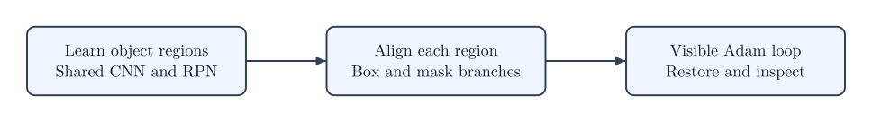
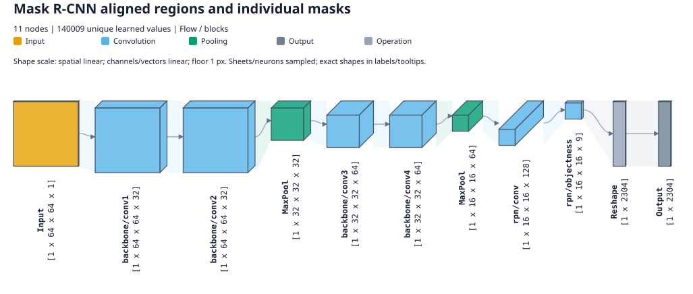
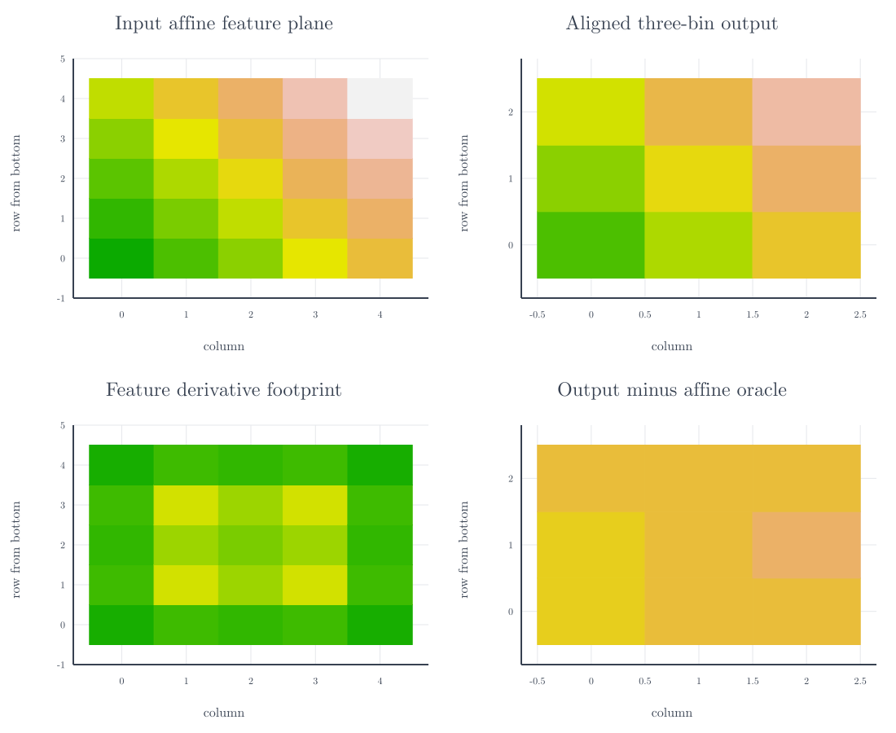
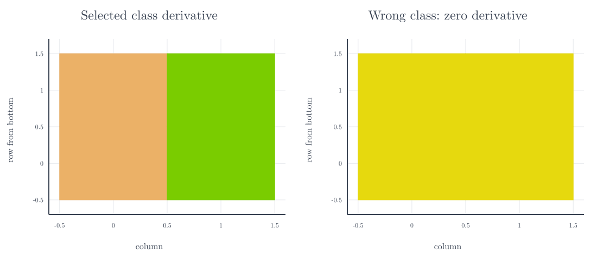
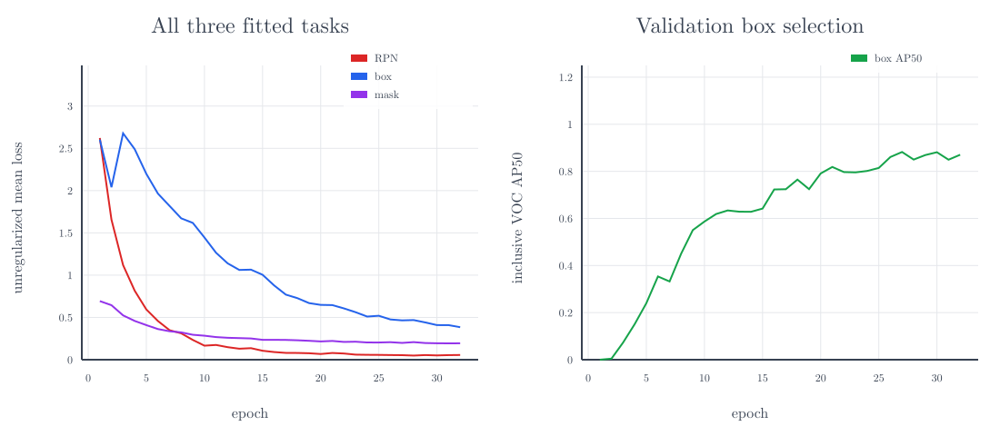
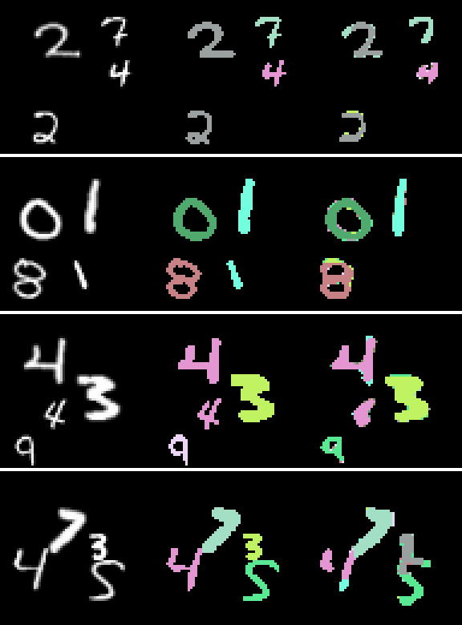

Mask R-CNN aligned regions and individual masks
Abstract
An object detector supplies boxes,but separating each object's pixels also requires accurate spatial alignment and a class-specific support prediction. This report checks aligned tensor sampling and mask gradients,then visibly fits every branch of the source compact Mask R-CNN and plots real held-out masks and measured errors.
Source example: examples/cpp/source/nn/1_convolutional_neural_networks/1.7_segmentation/mask_rcnn.cpp.
The method
Continuous regions supply aligned features to separate box and sigmoid mask heads. A shared backbone and RPN learn proposals jointly with classification,box regression and positive-region mask BCE. Tensor-generated MNIST scenes retain a separate support for every object.
The concept diagram below is drawn by dm::graphics::Diagram. Its editable C++
source is the complete block below; regeneration uses the same datamunge toolchain
as the numerical examples. Exports consume the saved local SVG.
#include <dm/dm.hpp>
int main() {
std::filesystem::create_directories("build");
dm::graphics::Diagram diagram;
diagram.node("n0", {0.0, 0}, "Learn object regions\nShared CNN and RPN");
diagram.node("n1", {5.2, 0}, "Align each region\nBox and mask branches");
diagram.node("n2", {10.4, 0}, "Visible Adam loop\nRestore and inspect");
diagram.edge("n0", "n1").edge("n1", "n2");
diagram.save_svg("build/mask_rcnn_concept.svg");
}
Executed tensor architecture
This figure executes the inference configuration shown in the code, using a zero-valued shape probe without fitting or loading a checkpoint. Named stage boundaries group whole subgraphs where available; other nodes retain functional-layer detail. Exact batch-inclusive shapes and reachable parameter totals come from the trace. Shared linear scales map spatial dimensions and channel counts to blocks; the one-pixel visibility floor is disclosed in the legend. Labels use compact monospace text, rotate counterclockwise and sit beside their own glyphs. Arrows flow left to right; wide diagrams scroll at native size on the website.
#include <dm/dm.hpp>
int main() {
namespace n = dm::nn;
namespace m = n::models;
n::set_num_threads(2);
std::filesystem::create_directories("build");
m::DetectionSceneConfig cfg;
n::ParameterStore p(17);
cfg.scenes = 80;
cfg.seed = 11;
cfg.max_overlap = 0;
n::Module architecture_model(
[&](const n::Tensor& image) {
return m::CompactMaskRcnnForward(p, image).rpn.objectness_logits;
},
"Mask R-CNN aligned regions and individual masks");
n::ModelPlotOptions options;
options.style = n::ModelPlotStyle::Flow;
options.detail = n::ModelPlotDetail::Blocks;
options.labels = {.type = n::ModelPlotLabel::NameAndShape, .size = 12, .wrap = 24};
options.spacing = {.layer = 24, .lane = 12, .label = 8, .margin = 20};
options.sizing.spatial_size = 96;
options.sizing.channel_size = 42;
options.sizing.minimum_extent = 1;
options.opacity = .8;
const auto diagram = architecture_model.plot(n::zeros({1, 64, 64, 1}), options);
diagram.save_svg("build/mask_rcnn_architecture.svg");
std::print(
"{} displayed nodes; {} reachable learned values.\n",
diagram.nodes().size(),
diagram.parameter_count());
}11 displayed nodes; 140009 reachable learned values.

Aligned sampling before classification
Mask R-CNN needs a separate binary support for each detected object. Quantizing region boundaries can discard subpixel alignment,so this example retains continuous pixel coordinates. A feature cell centre lies at image coordinate \(s(i+1/2)\). For output bin \(j\) and sample \(a\in\{0,1\}\),the aligned feature coordinate is
Four bilinear samples per bin are averaged,with border replication. This is the source example's fixed regular2x2 aligned convention;it is not a claim that every Mask R-CNN implementation uses the same alignment/default sampling ratio. Boxes and image IDs are detached;gradients flow into features. The controlled plane below has value \(1+2y+3x\),so interior bilinear interpolation reproduces the plane exactly. Native independent arithmetic also checks every feature derivative at fractional coordinates and replicated borders(error below3e-6).
#include <dm/dm.hpp>
int main() {
namespace n = dm::nn;
namespace m = n::models;
auto f = (1. + 2. * n::arange(0, 5).reshape({5, 1}) + 3. * n::arange(0, 5).reshape({1, 5}))
.reshape({1, 5, 5, 1})
.requires_grad_();
const auto y = m::MaskRoiAlign(f, n::tensor({2., 2., 18., 18.}, {1, 4}),
n::zeros({1}, n::DType::Int64), 4, 3);
const auto g = n::grad(n::sum(y), {f})[0];
auto a = n::plot_tensor_map(n::reverse(f.reshape({5, 5}), {0}), 0, 21),
b = n::plot_tensor_map(n::reverse(y.reshape({3, 3}), {0}), 0, 21),
c = n::plot_tensor_map(n::reverse(g.reshape({5, 5}), {0}), 0, 1.5);
const auto expected = 1. + (8. / 3.) * (n::arange(0, 3).reshape({3, 1}) + .5) +
4. * (n::arange(0, 3).reshape({1, 3}) + .5);
const auto difference = y.reshape({3, 3}) - expected;
if (n::max(n::abs(difference)).item() > 1e-5)
return 1;
auto d = n::plot_tensor_map(n::reverse(difference, {0}), -1e-5, 1e-5);
d.title("Output minus affine oracle");
a.title("Input affine feature plane");
b.title("Aligned three-bin output");
c.title("Feature derivative footprint");
std::filesystem::create_directories("build");
dm::graphics::RLayout::create(2, 2)
.add(a)
.add(b)
.add(c)
.add(d)
.size(1100, 900)
.fit_panels()
.save_svg("build/mask_rcnn_align.svg");
std::print("Aligned first/centre/last values:{:.6f}/{:.6f}/{:.6f};feature gradient "
"sum:{:.6f} for nine outputs. Boxes detached,no fitting.\n",
y.to_vector<float>()[0], y.to_vector<float>()[4], y.to_vector<float>()[8],
n::sum(g).item());
if (std::abs(n::sum(g).item() - 9) > 1e-6)
return 1;
}Aligned first/centre/last values:4.333334/11.000002/17.666670;feature gradient sum:9.000000 for nine outputs. Boxes detached,no fitting.

Class-specific sigmoid masks
Each positive region has one foreground class label \(c_k\),and only that mask channel receives a gradient. Masks use independent sigmoid probabilities, not a softmax across classes. With K positive regions and SxS pixels,
For a2x2 region with zero logits,selected-class gradients are plus/minus1/8 when K=2,while all wrong-class derivatives are exactly zero. The scalar loss is log(2). Empty positives return a differentiable zero. Support targets are nearest pixel-centre crops from the highest-box-IoU object(first truth on ties), and that object's class must agree with the sampled region. They are not a union foreground mask. No optimizer runs in these arithmetic checks.
#include <dm/dm.hpp>
int main() {
namespace n = dm::nn;
auto z = n::zeros({2, 2, 2, 3}).requires_grad_();
const auto target = n::tensor({0., 1., 0., 1., 1., 1., 0., 0.}, {2, 2, 2});
const auto loss = n::models::SelectedInstanceMaskLoss(
z, n::from_vector(std::vector<std::int64_t>{0, 2}), target);
const auto gradient = n::grad(loss, {z})[0];
auto selected = n::plot_tensor_map(
n::reverse(n::slice_axis(n::slice_axis(gradient, 0, 0, 1), 3, 0, 1).reshape({2, 2}),
{0}),
-.15, .15),
wrong = n::plot_tensor_map(
n::reverse(n::slice_axis(n::slice_axis(gradient, 0, 0, 1), 3, 1, 2).reshape({2, 2}),
{0}),
-.15, .15);
selected.title("Selected class derivative");
wrong.title("Wrong class: zero derivative");
std::filesystem::create_directories("build");
dm::graphics::RLayout::create(1, 2)
.add(selected)
.add(wrong)
.size(1100, 480)
.fit_panels()
.save_svg("build/mask_rcnn_selected.svg");
if (std::abs(loss.item() - std::log(2.)) > 1e-7)
return 1;
std::print("Selected-class BCE {:.9f};first region selected gradients -/+.125,wrong classes "
"exactly zero.\n",
loss.item());
}Selected-class BCE 0.693147182;first region selected gradients -/+.125,wrong classes exactly zero.

The initialized full mask head and the complete compact model
The full mask branch uses four256-channel3x3 ReLU convolutions,a learned2x2 stride2 transpose convolution and80 linear class channels. It has2,643,280 learned scalars and twelve parameter tensors;the complete initialized head and all gradients execute below. This checks the mask branch,not a complete pretrained ResNet/FPN Mask R-CNN.
The fitted source adaptation uses a64px grayscale stride4 backbone,a hidden128 RPN with2304 anchors,an aligned7-bin hidden256 box head,and an aligned14-bin mask head with four32-channel layers and ten28x28 mask channels. Every branch is trained. There is no BN or moving model state.
#include <dm/dm.hpp>
int main() {
namespace n = dm::nn;
namespace m = n::models;
n::set_num_threads(2);
for (bool full : {true, false}) {
n::ParameterStore p(17);
const int channels = full ? 256 : 64;
const auto input =
n::sin(.13 * n::arange(0, 2 * 14 * 14 * channels)).reshape({2, 14, 14, channels});
const auto output = m::MaskRcnnHead(p, input, full ? 256 : 32, full ? 80 : 10);
const auto g = n::grad(n::mean(n::square(output)), p.parameters());
for (const auto &value : g)
if (!value.defined() ||
!std::isfinite(n::sum(n::square(value.to(n::DType::Float64))).item()) ||
(!full && n::sum(n::square(value)).item() <= 0))
return 1;
if (p.count() != (full ? 2643280 : 50666) || g.size() != 12)
return 1;
std::print(
"{} mask head:{} learned scalars,{} finite gradients,28px output;no fitted weights.\n",
full ? "Full" : "Compact", p.count(), g.size());
}
}Full mask head:2643280 learned scalars,12 finite gradients,28px output;no fitted weights. Compact mask head:50666 learned scalars,12 finite gradients,28px output;no fitted weights.
Actual images and individual supports
First2048 training-source MNIST digits generate80 scenes(seed11):64 fitting and16 validation. First512 test-source digits generate eight held-out scenes (seed22). Each attempted digit has a16..32px rescaled cell;its tight box and individual support follow pixels brighter than32 after byte rounding. Rejecting box overlap keeps this teaching task simpler than real instance segmentation. The canonical tensor sampler retains the original discrete draw order;bilinear borderline rounding may differ by one byte from the old host implementation. The first four actual fitting images and their coloured supports appear below. Colours identify digit labels using the documented ten-class palette.
#include <dm/dm.hpp>
int main() {
namespace n = dm::nn;
namespace m = n::models;
std::filesystem::path cache;
if (const auto *p = std::getenv("DATAMUNGE_DATA_DIR"))
cache = p;
else if (const auto *p = std::getenv("XDG_CACHE_HOME"))
cache = std::filesystem::path(p) / "datamunge/datasets";
else
cache = std::filesystem::path(std::getenv("HOME")) / ".cache/datamunge/datasets";
dm::datasets::fetch("mnist", (cache / "mnist").string());
const auto digits = n::load_mnist((cache / "mnist").string(), "train");
m::DetectionSceneConfig cfg;
cfg.scenes = 80;
cfg.seed = 11;
cfg.max_overlap = 0;
const auto scenes = m::MakeTensorInstanceScenes(
n::slice_axis(digits.images, 0, 0, 2048), n::slice_axis(digits.labels, 0, 0, 2048), cfg);
std::filesystem::create_directories("build");
n::save_image_grid(m::InstanceMaskPreview(scenes), "build/mask_rcnn_data.png", 1, 0, 1, 4,
1., 3);
std::print(
"80 actual64px MNIST training-source scenes:rows0..63 fit,64..79 validation;first four "
"image/truth-support pairs shown. Up to four attempted digits,nonoverlapping tight "
"boxes;support is resampled byte>32. Validation never supplies optimization targets.\n");
}80 actual64px MNIST training-source scenes:rows0..63 fit,64..79 validation;first four image/truth-support pairs shown. Up to four attempted digits,nonoverlapping tight boxes;support is resampled byte>32. Validation never supplies optimization targets.

Visible optimization of every branch
Warm all learned leaves before Adam(.001). The full compact model fits32epochs,
batch4,512 updates. Each update shares one backbone evaluation across the RPN,
box and mask objectives. Detached RPN proposals plus truth/random regions supply
64 sampled RoIs/image,at most one-quarter foreground. Only positive regions
train masks. The joint objective is RPN logistic/Smooth-L1 + box CE/selected-class
Smooth-L1 + selected sigmoid mask BCE,with explicit.00005*sum(kernel²).
All learned biases remain optimized outside that kernel penalty.
As in the source,the highest validation *box AP50* selects learned weights; there is no BN state to pair. The restored score is checked before testing. Test decoding uses learned proposals only,strict class score>.05 and per-class NMS.3;selected sigmoid28px masks paste at decoded boxes with bilinear border sampling and inclusive threshold.5. The printed mask metric uses integral all-point precision-envelope AP,averaged over classes with truth and optionally over ten IoU thresholds. It is *not official COCO mask AP*:there is no101-point recall sampling,crowd/area handling or official evaluator protocol.
#include <dm/dm.hpp>
int main() {
namespace n = dm::nn;
namespace m = n::models;
n::set_num_threads(2);
std::filesystem::path cache;
if (const auto *p = std::getenv("DATAMUNGE_DATA_DIR"))
cache = p;
else if (const auto *p = std::getenv("XDG_CACHE_HOME"))
cache = std::filesystem::path(p) / "datamunge/datasets";
else
cache = std::filesystem::path(std::getenv("HOME")) / ".cache/datamunge/datasets";
dm::datasets::fetch("mnist", (cache / "mnist").string());
const auto train = n::load_mnist((cache / "mnist").string(), "train");
m::DetectionSceneConfig cfg;
cfg.scenes = 80;
cfg.seed = 11;
cfg.max_overlap = 0;
const auto scenes = m::MakeTensorInstanceScenes(
n::slice_axis(train.images, 0, 0, 2048), n::slice_axis(train.labels, 0, 0, 2048), cfg);
const auto anchors = n::anchor_grid(16, 16, 4, {12, 20, 30}, {.5, 1, 2});
std::vector<std::int64_t> fit_rows(64), val_rows(16);
std::iota(fit_rows.begin(), fit_rows.end(), 0);
std::iota(val_rows.begin(), val_rows.end(), 64);
n::ParameterStore p(17);
// Warm every backbone,RPN,box and mask leaf before constructing Adam.
{
n::NoGradGuard guard;
const auto net = m::CompactMaskRcnnForward(p, n::zeros({1, 64, 64, 1}));
const auto boxes = n::tensor({0., 0., 16., 16.}, {1, 4}),
ids = n::zeros({1}, n::DType::Int64);
m::PooledDetectionRoiHead(p, m::MaskRoiAlign(net.features, boxes, ids, 4, 7));
m::MaskRcnnHead(p, m::MaskRoiAlign(net.features, boxes, ids, 4, 14), 32, 10);
}
const auto truth_records = [](const m::TensorDetectionScenes &data,
const std::vector<std::int64_t> &rows) {
std::vector<m::DetectionEvaluationTruth> truth;
for (const auto i : rows) {
const auto boxes = n::boxes_to_vector(data.boxes[i]);
const auto labels = data.labels[i].to_vector<int>();
for (std::size_t k = 0; k < boxes.size(); ++k)
truth.push_back({int(i), labels[k], boxes[k]});
}
return truth;
};
// Box-only validation composes tensor inference calls;mask metrics are held for test.
const auto detect_boxes = [&](const m::TensorDetectionScenes &data,
const std::vector<std::int64_t> &rows) {
n::NoGradGuard guard;
const auto net =
m::CompactMaskRcnnForward(p, 2. * n::gather(data.images, n::from_vector(rows)) - 1.);
const auto proposals = m::ComputeDetectionProposals(net.rpn, anchors, 64, 64);
const auto regions = m::PackDetectionRois(proposals);
if (!regions.indices.numel())
return m::TensorDetections{n::zeros({0, 4}), n::zeros({0}),
n::zeros({0}, n::DType::Int64),
n::zeros({0}, n::DType::Int64)};
const auto head = m::PooledDetectionRoiHead(
p, m::MaskRoiAlign(net.features, regions.pixels, regions.indices, 4, 7));
return m::DecodeDetectionRoiOutputs(head, regions.pixels,
n::gather(n::from_vector(rows), regions.indices));
};
const auto val_truth = truth_records(scenes, val_rows);
const std::vector<int> val_ids(val_rows.begin(), val_rows.end());
n::OptimizerConfig config;
config.kind = n::OptimizerKind::Adam;
n::Optimizer adam(p, .001, config);
n::BatchOrder order(64, 4, 29);
n::Generator sampling(7);
std::vector<n::Tensor> kernels;
for (const auto &leaf : p.parameters())
if (leaf.dim() >= 2)
kernels.push_back(leaf);
std::filesystem::create_directories("build");
const std::string checkpoint = "build/mask_rcnn_best.npz";
double best = -1;
int selected = 0, steps = 0;
std::int64_t positive_count = 0;
std::vector<double> epochs, losses, rpn_trace, box_trace, mask_trace, validation;
std::print("| epoch | joint loss | RPN | box | mask | val box AP50 "
"|\n|---:|---:|---:|---:|---:|---:|\n");
for (int epoch = 1; epoch <= 32; ++epoch) {
order.begin_epoch();
double total = 0, pr = 0, br = 0, mr = 0;
std::size_t seen = 0;
for (auto rows = order.next(); !rows.empty(); rows = order.next()) {
const auto net = m::CompactMaskRcnnForward(
p, 2. * n::gather(scenes.images, n::from_vector(rows)) - 1.);
const auto proposals = m::ComputeDetectionProposals(net.rpn, anchors, 64, 64);
const auto batch = m::SampleDetectionRois(scenes, rows, proposals, sampling);
const auto target = m::MakeDetectionRpnTargets(anchors, scenes, rows, sampling);
const auto head = m::PooledDetectionRoiHead(
p, m::MaskRoiAlign(net.features, batch.pixels, batch.indices, 4, 7));
const auto masks = m::PositiveInstanceMaskTargets(scenes, rows, batch);
if (!masks.indices.numel())
return 1;
const auto logits = m::MaskRcnnHead(
p, m::MaskRoiAlign(net.features, masks.boxes, masks.indices, 4, 14), 32, 10);
const auto rpn_loss =
m::RpnLoss(net.rpn, target.labels, target.weights, target.targets, target.positives);
const auto box_loss = m::DetectionRoiLoss(head, batch.labels, batch.targets, batch.mask);
const auto mask_loss = m::SelectedInstanceMaskLoss(logits, masks.labels, masks.targets);
const auto joint = rpn_loss + box_loss + mask_loss;
auto penalty = n::zeros({});
for (const auto &kernel : kernels)
penalty = penalty + n::sum(n::square(kernel));
if (!std::isfinite(joint.item()))
return 1;
total += joint.item() * rows.size();
pr += rpn_loss.item() * rows.size();
br += box_loss.item() * rows.size();
mr += mask_loss.item() * rows.size();
seen += rows.size();
positive_count += masks.indices.numel();
adam.minimize(joint + .00005 * penalty);
++steps;
}
const auto metric = m::EvaluateDetectionDataset(
m::DetectionEvaluationRecords(detect_boxes(scenes, val_rows)), val_truth, val_ids,
false, true);
epochs.push_back(epoch);
losses.push_back(total / seen);
rpn_trace.push_back(pr / seen);
box_trace.push_back(br / seen);
mask_trace.push_back(mr / seen);
validation.push_back(metric.ap50.item());
if (validation.back() > best) {
best = validation.back();
selected = epoch;
p.save(checkpoint);
}
std::print("| {} | {:.6f} | {:.6f} | {:.6f} | {:.6f} | {:.6f} |\n", epoch, losses.back(),
rpn_trace.back(), box_trace.back(), mask_trace.back(), validation.back());
}
p.load(checkpoint);
const auto restored = m::EvaluateDetectionDataset(
m::DetectionEvaluationRecords(detect_boxes(scenes, val_rows)), val_truth, val_ids, false,
true);
if (std::abs(restored.ap50.item() - best) > 1e-12)
return 1;
const auto digits = n::load_mnist((cache / "mnist").string(), "test");
cfg.scenes = 8;
cfg.seed = 22;
const auto test = m::MakeTensorInstanceScenes(n::slice_axis(digits.images, 0, 0, 512),
n::slice_axis(digits.labels, 0, 0, 512), cfg);
std::vector<std::int64_t> rows(8);
std::iota(rows.begin(), rows.end(), 0);
const std::vector<int> image_ids(rows.begin(), rows.end());
const auto output = m::DetectCompactMaskRcnn(p, test, rows);
const auto truth = truth_records(test, rows);
const auto box_metric = m::EvaluateDetectionDataset(
m::DetectionEvaluationRecords(output.objects), truth, image_ids, false, true);
const auto mask50 = m::InstanceMaskAveragePrecision(output, test, 10, .5),
mask75 = m::InstanceMaskAveragePrecision(output, test, 10, .75);
auto mask_average = n::zeros({}, n::DType::Float64);
for (int k = 0; k < 10; ++k)
mask_average =
mask_average + m::InstanceMaskAveragePrecision(output, test, 10, .5 + .05 * k) / 10.;
{
std::vector<n::Tensor> truth_images;
for(std::int64_t row=0;row<test.images.size(0);++row)truth_images.push_back(n::full({test.labels[row].numel()},double(row),n::DType::Int64));
n::save_npz("build/mask_rcnn_masks.npz",{{"predicted_masks",output.masks},{"predicted_labels",output.objects.labels},{"predicted_images",output.objects.images},{"scores",output.objects.scores},{"truth_masks",n::concat(test.masks,0)},{"truth_labels",n::concat(test.labels,0)},{"truth_images",n::concat(truth_images,0)},{"metrics",n::stack({mask50,mask75,mask_average},0)}});
}
n::save_image_grid(m::InstanceMaskPreview(test, &output), "build/mask_rcnn_predictions.png",
1, 0, 1, 4, 1., 3);
std::filesystem::create_directories("figures");
std::filesystem::copy_file("build/mask_rcnn_predictions.png",
"figures/mask_rcnn_predictions.png",
std::filesystem::copy_options::overwrite_existing);
auto a = dm::graphics::RPlot::create(), b = dm::graphics::RPlot::create();
a.lines(epochs, rpn_trace, "RPN", {220, 38, 38})
.lines(epochs, box_trace, "box", {37, 99, 235})
.lines(epochs, mask_trace, "mask", {147, 51, 234})
.title("All three fitted tasks")
.x_label("epoch")
.y_label("unregularized mean loss")
.y_limits(0, 1.3 * std::max({*std::max_element(rpn_trace.begin(), rpn_trace.end()),
*std::max_element(box_trace.begin(), box_trace.end()),
*std::max_element(mask_trace.begin(), mask_trace.end())}));
b.lines(epochs, validation, "box AP50", {22, 163, 74})
.title("Validation box selection")
.x_label("epoch")
.y_label("inclusive VOC AP50")
.y_limits(0, 1.25);
dm::graphics::RLayout::create(1, 2).add(a).add(b).size(1100, 480).fit_panels().save_svg(
"build/mask_rcnn_training.svg");
std::print("{} learned scalars,{} Adam updates,{} positive mask training regions;selected "
"epoch{},validation box AP50 {:.6f}. Test eight scenes/{} digits/{} "
"detections:box AP50 {:.6f};integral mask AP50 {:.6f},AP75 {:.6f},mean50:95 "
"{:.6f}. Mask AP is not the official COCO101-point protocol. No moving state.\n",
p.count(), steps, positive_count, selected, best, truth.size(),
output.objects.scores.numel(), box_metric.ap50.item(), mask50.item(),
mask75.item(), mask_average.item());
}| epoch | joint loss | RPN | box | mask | val box AP50 |
|---|---|---|---|---|---|
| 1 | 5.918297 | 2.622357 | 2.602925 | 0.693014 | 0.000000 |
| 2 | 4.341171 | 1.656920 | 2.039739 | 0.644511 | 0.004444 |
| 3 | 4.320780 | 1.119022 | 2.677537 | 0.524221 | 0.072827 |
| 4 | 3.763996 | 0.815775 | 2.489886 | 0.458335 | 0.151238 |
| 5 | 3.201558 | 0.594376 | 2.198191 | 0.408991 | 0.239938 |
| 6 | 2.783974 | 0.457474 | 1.964044 | 0.362455 | 0.353465 |
| 7 | 2.503502 | 0.348774 | 1.818205 | 0.336522 | 0.332296 |
| 8 | 2.306820 | 0.311886 | 1.671938 | 0.322995 | 0.450838 |
| 9 | 2.146334 | 0.233760 | 1.617672 | 0.294902 | 0.550487 |
| 10 | 1.894932 | 0.165914 | 1.445185 | 0.283832 | 0.586811 |
| 11 | 1.706353 | 0.174330 | 1.264469 | 0.267554 | 0.618663 |
| 12 | 1.546571 | 0.148181 | 1.139186 | 0.259204 | 0.633921 |
| 13 | 1.446866 | 0.129928 | 1.061526 | 0.255412 | 0.628654 |
| 14 | 1.452825 | 0.136413 | 1.065177 | 0.251235 | 0.628193 |
| 15 | 1.345643 | 0.105925 | 1.004521 | 0.235197 | 0.641847 |
| 16 | 1.203390 | 0.090500 | 0.877799 | 0.235090 | 0.723043 |
| 17 | 1.084246 | 0.080543 | 0.769751 | 0.233952 | 0.724140 |
| 18 | 1.037116 | 0.079795 | 0.727667 | 0.229654 | 0.764926 |
| 19 | 0.969461 | 0.076372 | 0.669466 | 0.223623 | 0.724359 |
| 20 | 0.931962 | 0.067500 | 0.648388 | 0.216074 | 0.791021 |
| 21 | 0.947024 | 0.079425 | 0.645816 | 0.221783 | 0.818654 |
| 22 | 0.890217 | 0.073277 | 0.606703 | 0.210237 | 0.796914 |
| 23 | 0.834713 | 0.060009 | 0.561875 | 0.212829 | 0.795619 |
| 24 | 0.771976 | 0.057829 | 0.510244 | 0.203903 | 0.801726 |
| 25 | 0.780145 | 0.056894 | 0.519659 | 0.203592 | 0.814516 |
| 26 | 0.738170 | 0.055044 | 0.475974 | 0.207152 | 0.860946 |
| 27 | 0.717453 | 0.053710 | 0.465113 | 0.198631 | 0.882186 |
| 28 | 0.725552 | 0.048935 | 0.468704 | 0.207913 | 0.850000 |
| 29 | 0.692604 | 0.054801 | 0.440579 | 0.197224 | 0.869167 |
| 30 | 0.654428 | 0.050720 | 0.409364 | 0.194344 | 0.881196 |
| 31 | 0.656669 | 0.054210 | 0.409134 | 0.193325 | 0.849490 |
| 32 | 0.634134 | 0.055836 | 0.384365 | 0.193934 | 0.870476 |
1077290 learned scalars,512 Adam updates,29563 positive mask training regions;selected epoch27,validation box AP50 0.882186. Test eight scenes/26 digits/95 detections:box AP50 0.829762;integral mask AP50 0.771561,AP75 0.407407,mean50:95 0.413016. Mask AP is not the official COCO101-point protocol. No moving state.

Compare mask AP50 and AP75 to see how tighter overlap requirements affect the score. The eight test scenes contain 26 digits, so these subset results illustrate the evaluation procedure.

Regenerate adjacent views from this run
#include <dm/dm.hpp>
int main(){std::filesystem::copy_file("build/mask_rcnn_predictions.png","build/export_mask_rcnn_predictions.png",std::filesystem::copy_options::overwrite_existing);}Conclusion
Independent interpolation and derivative checks precede full mask-head execution and complete compact fitting. Visible optimization,validation box selection and true held-out support galleries expose the limits of the bounded digit experiment. Reported integral mask AP remains distinct from the official COCO protocol;no pretrained benchmark result is claimed.
References
- [He,Gkioxari,Dollár and Girshick (2017),Mask R-CNN](https://arxiv.org/abs/1703.06870).
- [Ren et al.(2015),Faster R-CNN](https://arxiv.org/abs/1506.01497).